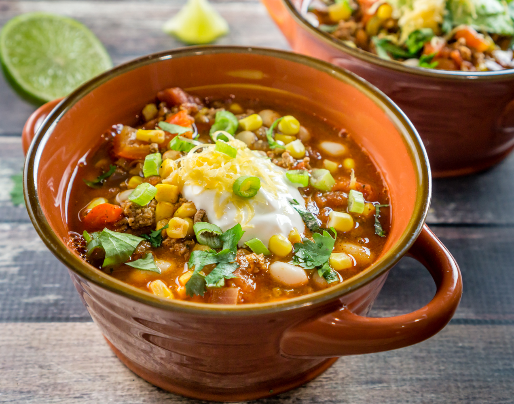

South West Chili

Description
This recipe also includes and thick chunks of jalapenos, red onion and red bell pepper. These tender veggies give this bowl of chili a little extra crunch and texture, making it a chunkier, stew-like chili recipe. This is a staple for Southwestern-style chili recipes.
Ingredients
- 1 Small Red Onion, Diced
- 2 Cloves of Garlic, Minced
- 1 Jalapeño Pepper, Seeds and Pith Removed, Diced
- 2 Tbsp Olive Oil
- 2 Tbsp Chili Powder
- 1 Tbsp Dried Oregano
- 1 lb Ground Beef (90% Lean is Recommended)
- 28-oz Can Dived Tomatoes
- 2 Cups of Water
- 1 Red Bell Pepper, Seeds Removed and Diced
- 15.4-oz Jar Randall Beans Great Northern Beans, Drained and Rinsed
- 14-oz Can Whole Corn Kernels, Drained and Rinsed
- Salt to Taste
- 1/4 Cup Cilantro Leaves, Chopped
- Garnishes: Sour Cream, Shredded Cheddar Cheese, Chopped Scallions, Chopped Cilantro and/or Sliced Avocado
Steps
- Heat the olive oil in a large soup pot and add the diced red onion, minced garlic, and diced jalapeño.
- Sauté over medium heat for 2-3 minutes.
- Add the chili powder and oregano, and stir well.
- Add the ground beef and cook over high heat for about 5 minutes, stirring frequently.
- Add the diced tomatoes and water, and bring to a boil.
- Add the diced bell pepper, Great Northern beans, and corn; bring to a boil.
- Lower the heat and simmer for 15-20 minutes, or until the chili has thickened to your liking.
- Add salt to taste.
- Remove from heat and stir in the chopped cilantro leaves.
- Ladle into bowls, and top with your favorite chili garnishes